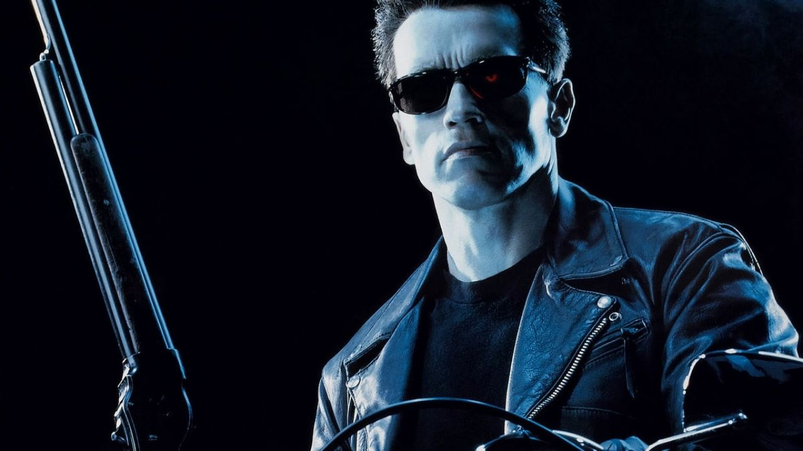
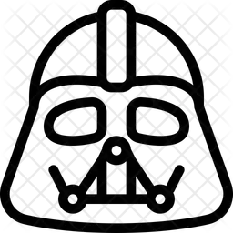

2001: Uma Odisseia no Espaço — O Impossível Construído Fisicamente
Lançado em 1968, 2001: Uma Odisseia no Espaço consolida-se
como um marco paradigmático da utilização de efeitos predominantemente
físicos, mecânicos e ópticos. Na ausência de ferramentas
computacionais modernas para a geração de imagens, Stanley Kubrick e
sua equipe recorreram a um rigoroso processo de engenharia
cinematográfica para representar viagens espaciais e ambientes
futuristas com inédita verossimilhança. A ilusão de vastidão cósmica e
a movimentação de imensas espaçonaves foram obtidas por meio da
construção meticulosa de miniaturas hiperdetalhadas, combinadas com
sistemas complexos de controle de movimento (motion control
rudimentar), projeções frontais e traseiras, além da célebre técnica
de impressão óptica em múltiplos passos com a câmera
slit-scan.
O trabalho artesanal exigia um planejamento matemático rigoroso, uma
vez que cada elemento da composição — desde a rotação da estação
espacial até o comportamento da gravidade artificial — precisava ser
calculado e registrado fisicamente pela película fotográfica antes da
pós-produção. Os cenários em escala real, como a gigante centrífuga
giratória, impuseram uma fisicidade corpórea aos atores e ao espaço.
Essa fase histórica evidencia que a ausência de computação gráfica não
equivalia à carência de sofisticação tecnológica; pelo contrário, o
cinema exigia a construção material daquilo que pretendia figurar,
atestando que a credibilidade da imagem dependia diretamente da
precisão da ótica mecânica e da destreza artesanal.

T800, símbolo da saga O Exterminador do Futuro.
O Exterminador do Futuro 2 — A Transição para o Digital
A virada para a década de 1990 inaugurou uma nova chave ontológica
para os efeitos visuais com
O Exterminador do Futuro 2 (1991), dirigido por James
Cameron. O filme funciona como o divisor de águas definitivo na
transição entre o predomínio dos efeitos práticos tradicionais e a
exploração sistemática da computação gráfica. O exemplo mais
emblemático dessa simbiose é o antagonista T-1000, cuja habilidade de
fluir e se regenerar na forma de metal líquido foi concebida mediante
a articulação pioneira entre maquiagem, animatrônicos, efeitos ópticos
tradicionais e modelagem tridimensional gerada por computador.
A computação gráfica começou a desatar amarras formais até então
intransponíveis, permitindo a criação de formas morfológicas fluidas,
transformações topológicas e trajetórias cinéticas que exigiriam
artifícios mecânicos inviáveis ou múltiplas e complexas sobreposições
ópticas.
Historicamente, essa transformação reconfigurou a sintaxe
cinematográfica: o computador não operou como um substituto imediato
dos métodos empíricos, mas como um elemento potencializador. A
maleabilidade do pixel passou a dialogar diretamente com o látex e o
metal, inaugurando a era em que a plasticidade digital expandiu o
vocabulário expressivo da mise-en-scène.
Star Wars: Episódio I — A Ameaça Fantasma — A Era dos Efeitos Híbridos

Darth Vader, símbolo da saga Star Wars.
Com Star Wars: Episódio I — A Ameaça Fantasma (1999), o
cinema blockbuster consolidou um modelo de produção intrinsecamente
híbrido. A obra de George Lucas materializa a expansão definitiva da
computação gráfica não como um adendo isolado, mas como o aglutinador
de um ecossistema produtivo que continuou a valorizar cenários físicos
de grande escala, miniaturas intrincadas, figurinos táteis, maquiagens
complexas e criaturas animatrônicas.
A proliferação de ambientes e personagens inteiramente digitais — como
o personagem Jar Jar Binks e as vastas sequências de batalhas campais
— demonstrou a capacidade de injetar elementos sintéticos em um tecido
cênico preexistente capturado em película ou suportes digitais
iniciais.
Essa fase evidencia que a evolução tecnológica não implicou a extinção
do efeito prático, mas a emergência de uma nova lógica industrial e
estética: a hibridização. Diferentes matrizes tecnológicas passaram a
coexistir e a se interpenetrar no interior do mesmo fotograma,
diluindo as fronteiras entre o que foi construído em estúdio e o que
foi calculado em matrizes algorítmicas.